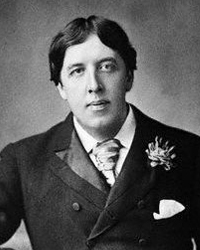

Оскар Уайльд
Роки життя: 1854−1900
Читати:
«Портрет Доріана Грея» (скорочено)
Народився Оскар Уальд у 1854 році в Дубліні , столиці Ірландії , в сімї , де все було прийнято любовю до науки і мистецтв . Його батька, сера Уільяма , знали не тільки як відомого хірурга – офтальмолога , а і як архєолога – аматора , знавця кельтського фольклору та письменника.
Леді Уальд , мати Оскара , теж була письменницею і активно боролася за свободу Ірландії. Коли хлопцю виповнилося 10 років , перед ним розчинилися двері найпрестижніших навчальних закладів Великобританії : він відвідував школу Портора і Трініті – коледж у Дубліні , а згодом чи не найвідоміший університет світу – Оксфорд . Уальд мав репутацію першого учня. Завдяки своїм непересічним розумовим здібностям він одержував стипендії і премії. 1875 рік Уальд подорожував Італією, а нступного року ( разом з професором Мехаффі, відомим вченим і президентом Академії наук Ірландії) – Грецією. Його вчителями в Оксфорді були видатні мислителі й письменники , серед них Д.Раскін , У.Пейтер – відомі провідні теоретики естетизму. Тож не дивно , що в університеті Уайльд захопився естетськими ідеями. Згодом йому судилося стати одним із апостолів « естетського руху» у Великобританії. 1878 рік Уайльд блискуче закінчив Оксфорд , здобувши почесну премію Ньюдігейта за поему «Равенна».
Уже протягом перших років після закінчення університету Уайльд мав стійку репутацію лідера естетів і справжнього денді. Його можна було зустріти на прогулянці з духмяною квіткою соняшника. Він був неперевершеним майстром парадоксів і дотепів , які повторювалися в світських салонах. Цілком закономірно , що Уайльд майже одразу потрапив на вістря сатири модних карикатуристів та фейлетоністів , яких приваблювала і водночас дратувало його «строката» особа. Та й у майбутнього славетного письменника було доволі гострих слів , які глузливим , вїдливим змістом боляче дошкуляли супротивникам. Постійну увагу до своєї особи Уайльд уміло використовував як засіб самореклами, і його популярність швидко зростала. 1882 рік він читав лекції в США , а 1883 рік прожив кілька місяців у Парижі , де зустрівся з багатьма провідними французьськими літераторами :Е. Золя, А. Доде , С. Мелларме та ін. 29 травня 1884 року Оскар Уайльд одружився з Констанцією Ллольд і мав двох синів.
У другій половині 80-х років 19 ст. Літературна діяльність Уайльда набирала дедалі більших обертів. 1887 рік побачила світ його пародія на готичні романи «Кентервільський привид» , того самого року він став редактором журналу «Світ жінки». Незабаром були опубліковані перша збірка казок Уайльда «Щасливий принц та інші історії» , есе «Перо , олівець і отрута» й «Занепад брехні» , а також оповідання «Портрет містера У. Х.».
Широковідомий роман Уайльда «Портрет Доріана Грея» зявився 1890 рік , в одночас з ще одною його працею з естетики – «Критик як митець».
У першій половині 90-х років минулого століття Уайльд посідає одне з перших місць в англійській літературі. Тематичне багатство й жанрова розмаїтість його творів , їхня художня довершеність свідчать про неабиякий талант письиенника. Лише за один 1891 рік він створив пєсу «Герцогиня Падуанська» , есе «Душа людини за соціалізму» , а також випустив збірники своїх критичних праць («Задуми») , оповідань («Злочин лорда Артура Севіла») , казок («Гранатовий будиночок»). Протягом 1892 – 1895 років Уайльд досягає найбільшого успіху як драматург : з-під його пера виходять трагедія «Соломія» , комедії «Віяло леді Уїндемір» , «Ідеальний чоловік» і «Як важливо бути поважним». Уайльд був одним з тих , хто разом з Б.Шоу , сприяли відродженню англійської драматургії після відносного занепаду в 19 ст.
1895 рік – пік слави і водночас падіння Уайльда. Десь з 1891 року його постійним супутником стов лорд Альфред Дуглас. Батько Альфреда , маркіз Квінсберрі , переслідував писменника , звинувачуючи його в розбещенні сина . Уайльд порушив проти маркіза кримінальну справу , але невдовзі сам постав перед судом і програв процес. Його було засуджено на два роки , оголошено банкрутом , позбавлено батьківських прав і віддано на глум натовпу.
1897 рік , коли Уайльд вийшов із вязниці , його зустріли ворожість і презирство англійського суспільства , і він виїхав до Франції. Там на короткий час до нього повернулося натхнення , і Уайльд написав чудову поему «Балада Редінгської вязниці» (1898 рік). Але , на жаль , більше нічого , окрім цього шедевра , він уже не створив. Щоправда , збереглося ще його листування , серед якого вирізняється так звана тюремна сповідь «De Profundis» , де письменник аналізує свої заплутані стосунки з Боззі (лордом Альфредом Дугласом). Помер Оскар Уайльд в Парижі 30 листопада 1900 року.